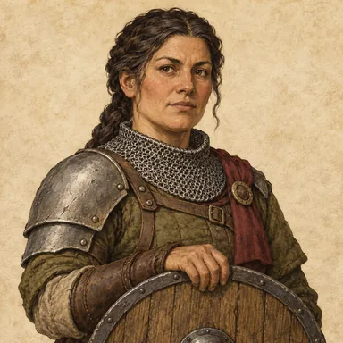
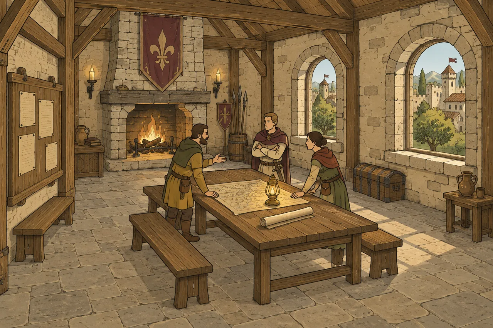
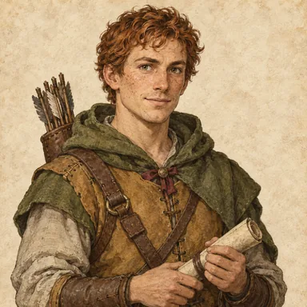
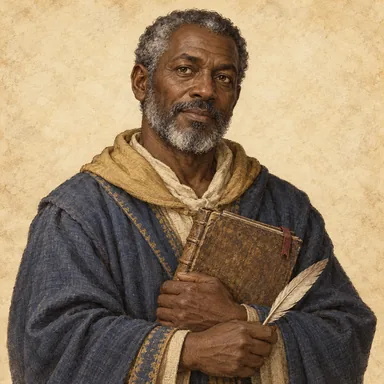
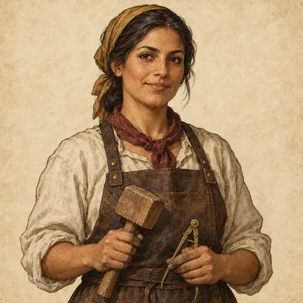
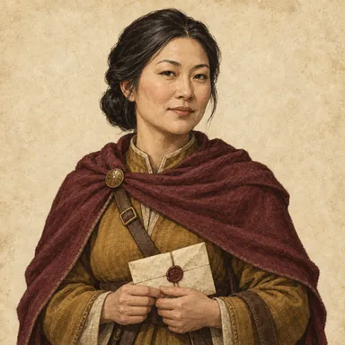
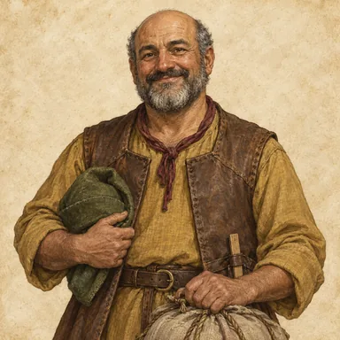
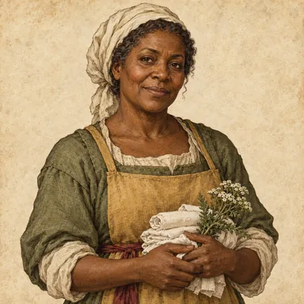
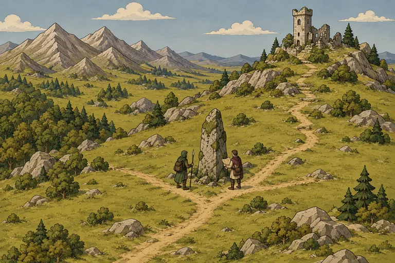

Guard
Protection on dangerous roads.
CROWNLANDS · ARTWORK REVIEW
Enter the Guild in the local game preview · Sample data only. Group 3 room upgrades are approved; champion and mission balance remain under review.

A place to return to
Recruit specialists, prepare expeditions and keep the stories of your members. Explore the five rooms below.
Members of your guild
Stable portraits and practical specialties.
Every member keeps their own name and history.

Protection on dangerous roads.

Safe passage through the wilds.

Clues, records and forgotten places.

Practical answers to difficult repairs.

Trust, negotiation and new recruits.

Prepared provisions and sound logistics.

Care on the journey and at home.

Beyond the gates
Eight independent illustrations depict each contract's own mission. All five Guild rooms have their own artwork, including improvement cards and details. Reports will explain the accepted odds, the party's contributions and the outcome.
Replaying a report will be presentation only. Its result and rewards remain authoritative.